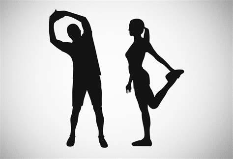

Wellness Articles
Explore our collection of articles that provide valuable insights into wellness, mental health, and holistic living.
1. The Importance of Mental Health
Mental health is a crucial component of overall wellness. This article discusses strategies for maintaining mental well-being, including mindfulness practices and the importance of seeking help when needed.
Key Insights
1. Mental health is just as important as physical health.
2. Mindfulness practices can significantly improve mental clarity and emotional stability.
3. Seeking help is a sign of strength, not weakness.
2. Nutrition for Holistic Wellness
A balanced diet plays a vital role in achieving overall wellness. This article delves into the types of foods that nourish both the body and mind, emphasizing the importance of whole foods and nutrients.
Key Insights
1. Whole foods support better health than processed foods.
2. Incorporating a variety of nutrients can enhance mood and energy levels.
3. Hydration is key to maintaining both physical and mental health.
3. The Benefits of Regular Exercise
Regular physical activity is essential for maintaining health and wellness. This article highlights the physical and mental benefits of exercise, providing tips for staying active in daily life.
Key Insights
1. Exercise improves mood and reduces anxiety levels.
2. Regular activity can prevent chronic diseases and improve longevity.
3. Finding enjoyable activities increases the likelihood of maintaining a routine.
4. Stress Management Techniques
Effective stress management is crucial for overall wellness. This article explores various techniques, including meditation, yoga, and time management strategies to help reduce stress levels.
Key Insights
1. Meditation can reduce stress and enhance emotional health.
2. Time management techniques can alleviate the feeling of being overwhelmed.
3. Regular breaks and self-care practices are essential for mental clarity.
5. The Importance of Sleep
Quality sleep is fundamental to wellness. This article discusses how sleep affects physical health, mental clarity, and overall well-being, offering tips for improving sleep hygiene.
Key Insights
1. Adequate sleep is essential for cognitive function and emotional stability.
2. Establishing a bedtime routine can improve sleep quality.
3. Limiting screen time before bed promotes better sleep.